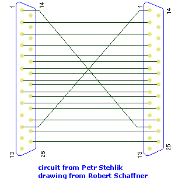
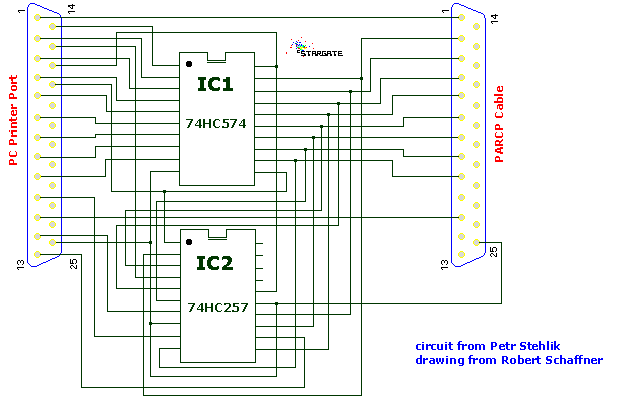

This is the second try of an useful documentation, I'm not good at that... Please read it if you can. If you're too impatient and can't read whole documentation before first start of PARCP, please read the "Quick, Three lines guide to PARCP installation and use" in the QUICK.TXT file.
PARCP stands for PARallel CoPier. It does copy files between two computers. It acts as a file network running over parallel (=printer) ports of those computers. This allows you to copy many and large files very quickly from one machine to another, either by simple drag & drop, or automated in batch mode or you can choose from two different user interfaces (command line like in a FTP client and fullscreen windows just like Norton Commander). In 2014 I developed PARCP-USB adapter that allows to interconnect computers with parallel ports (Atari and old PC machines) with computers that have USB ports (all newer computers basically). So PARCP is no longer tied with parallel ports only.
It's cheap, it's fast, it's available everywhere, and it's easy to setup and use.
The PARCP cable is all that's needed to connect two computers, and it can
be build for very few bucks. You can even look around and if you find
parallel LapLink cable, you need nothing but PARCP!
With the PARCP-USB adapter you can use an ordinary USB cable. No need to solder anything.
Connecting two computers with the cable takes only few seconds. All computers have either parallel ports or USB ports.
Not requiring a netcard also means that apart from connecting the cables, everything else is software configuration (which in principle could be made very easy).
PARCP can connect two computers running different operating systems. No need to search for a common network protocol, PARCP itself is the 'common protocol'.
PARCP needs not to be 'installed' in the way you know it from Microsoft operating systems - complicated procedure, several reboots, no ability to uninstall. No! PARCP can be just unpacked and started - and it works! Without reboots, without conflicts with other hardware or software components, without headaches...
PARCP can even connect two different platforms, like is IBM PC or clone and Atari ST (or compatible). For Atari computers it's even more important, because there are nearly no network cards.
Sometimes a ZIP disk is used to transfer files from one computer to another - first copy files from one computer to ZIP, then copy files from ZIP to another computer.
Is that easy? Fast? No!
PARCP easily outperforms parallel ZIP in reading - so if you connect those two computers with a PARCP cable, it's more than two times faster to copy the same amount of data from one computer to another.
With the invention of PARCP-USB adapter the PARCP got zero setup on a PC and it's also generally simpler to use on Atari. You just plug the PARCP-USB adapter into your Atari or old PC and start PARCP software. No need to configure anything. No need to bother with PAR_IN. You don't care about PC parallel port number, its type, BIOS setup, current input/output state etc. Luckily USB devices are plug&play and PARCP software detects everything automatically.
Best of all, with PARCP-USB it's much safer to interconnect two computers. Actually the connection can be permanent and you can turn on/off any of the two computers freely. There's no danger compared to using the special PARCP cable that requires some caution.
The great thing is that with PARCP-USB you just plug&play - and ignore all sections of this document that talk about PARCP cable, parallel port setup or issues with it.
PARCP has been designed to work on two different computer platforms:
I will use the word Atari as a general reference for any of the computers with Motorola CPU inside and running TOS or compatible operating system (MiNT/MagiC) and the word PC for any computer with Intel or compatible CPU and running DOS or compatible operating system (DOS/Windows9x/OS/2 for PARCP with cable, Windows XP and up for PARCP-USB) or Linux based one.
The main feature of PARCP is the ability of connecting of any two supported computers:
Parallel ports of PC computers are basically of two different types:
In addition, enhanced parallel ports (EPP and ECP) are supported as well and are programmed as bidirectional ones.
The unidirectional parallel port is not able to read bytes on data lines but has got five additional input lines for various purposes. Nearly all known programs use these additional input lines for reading 4-bit nibbles. They use so called 'LapLink' cable and 'LapLink' method of transferring data.
On the contrary, PARCP together with UNI-BI interface can read data by full 8-bit at once just like on bidirectional parallel port. Simply said PARCP UNI-BI interface makes you bidirectional parallel port from your old unidirectional one. That's why PARCP is usually about two times faster than its competitors!
If you have got an ECP or a EPP parallel port, then PARCP should work at the full speed and no hardware interface is needed.
Of course PARCP supports all standard parallel ports of PC - you can choose which one you will use for PARCP transfers in the process of configuration with PARCPCFG.
PARCP comes in three different binary files compiled for three supported platforms: Atari, DOS/Windows and Linux. All three binary versions of PARCP look and behave exactly the same way, which is good for user learning its capabilities.
PARCP 3.x comes with two different users interfaces. Historically first is the FTP-like, command line interface (CLI). Now the preferred interface is the new, fullscreen, easy to use, arrow and function keys driven (ParShell). If you've ever seen programs like Norton Commander, Volkov Commander, Midnight Commander or alike, the ParShell will be familiar to you.
The working environment can be utilized to your personal needs by many switches and parameters (please look into section 3.2.4).
PARCP can also be used in non-interactive way, without any user interface. This includes sending files by simple drag & drop onto PARCP's icon on desktop (TOS 2.x, MultiTOS, MagiC, Windows95) and also script files processing (see section 4.4).
PARCP is written in C. Additional assembler routines for both Motorola and Intel & compatible processors have been written for the highest possible transfer speed. The source code is 100% portable between all platforms and is compiled by GNU C 2.95.2 for all three destination operating systems - the result is very efficient full 32-bit code.
The support of special features of various operating systems is a matter of well written GNU C libraries (MiNTlibs on Atari and DJGPP libs on DOS).
It should be relatively simple to port PARCP to another platform with GNU C compiler and a little knowledge of the parallel port programming.
The list of most important changes and features of new PARCP version compared to previously released PARCP v3.90:
For more detailed informations please read the file HISTORY.TXT.
PARCP runs on Atari as well as on PC computers and clones, under all known operating systems that provide DOS or TOS support. PARCP makes the best use of any combination of hardware and OS.
There are also other programs for connecting computers via parallel ports, but only PARCP can connect any two computers thus you need not to learn how to use many different programs. PARCP is also much faster than its competitors, runs under more operating systems, it's simpler to use and supports multitasking.
There are some things left to do, as well as a few things to fix. The "to do" list is as follows, in no particular order.
Write me if you want another feature...
Other neat features would be:
PARCP is freeware since June 2015 thus it's available completely for free. The author thanks sincerely to all the registered PARCP users that payed the original shareware fee in previous 19 years. It helped greatly to keep this project alive.
Please note that when connecting two PC computers together, you can use the well known LapLink cable (ask for Parallel LapLink cable in your nearest computer shop).
Though for connecting an Atari computer to another computer (PC or Atari, doesn't matter) you have to use PARCP cable.
***************************************************************** * Note: you need not to build the cable, you can simply buy it! * * * * Please refer to the section 6.3 of this document. * *****************************************************************
The following diagram shows you how to build your own parallel cable for use with my PARCP (PARallel CoPy). This cable allows you to connect your computer with any other computer if both machines have either bidirectional parallel ports or UNI-BI adapter fitted.
The easiest way how to build the cable is to buy a cable for dataswitch. It's usually marked as 25M-25M. That means there are MALE Canon-25 connectors on both ends of that cable. The cable has either 18 or 25 wires in itself. The 18-wires one is sufficient for our needs, because PARCP uses just 18 wires. When you buy that cable, you just need to exchange wires on pins 1 an 11 at one ends of cable (and to cut the wires on unused pins such as pin 10,12,13..17).
The PARCP cable should consist of just 18 wires. The wiring diagram is as follows:

The 'schematics' above wanted to say that all 8 data bits are straight wires, while the Strobe and Busy signals are crossed in one connector. The GND is connected in both connectors as well, of course (please note that some cables do not have enough wires for connecting pins 18-24. In this case it should be OK to connect just the 25th pin).
This cable also works with ST-Trans © Atari 1992, with plip protocol of MiNT-Net © Kay Roemer and with HDD_DMN3 by MC Soft & Hard.
Warning: if the cable length should exceed 5 meters, please get a cable with proper metal shielding, otherwise random errors may occur during the transfer.
The UNI-BI HW adapter for PARCP is my own invention. It allows software to use originally unidirectional parallel port of old PC's as new, fast bidirectional one. PARCP can't use unidirectional port without this simple hardware interface. In other words: if PARTEST.EXE detects your parallel port as unidirectional, you must plug this interface into that port and let PARCP know that the interface is plugged by line UNI-BI = TRUE in your PARCP configuration file.
The UNI-BI adapter again is not sold anywhere, but when you know where the iron gets hot you should be able to build one yourself.
You need to buy/find_at_home:
The plastic cover looks like this:
+--+ +--+
|C |_________________| C|
this |A a FA| this
side |NM I bunch I EN| side
plug |NA C of C MN| ready
to |OL 1 wires 2 AO| for
PC |NE LN| PARCP
printer |2 _________________ E2| cable
port |5 | | 5|
+--+ +--+
The wiring diagram of UNI-BI HW adapter is as follows: 
I think the *HC* is important, because both IC's eat current from PC's parallel port and the maximum draw from it can be about 10 mA only IIRC.
If you didn't understand the diagram above, drop me a note and I'll try to explain it better.
PARCP-USB is in detail described at its own page. Generally speaking it's an adapter that is able to convert the parallel port of Atari (or a legacy PC) into a full speed USB port that can be simply connected to other PC's USB port with a plain USB cable. There's no need for a special PARCP cable anymore. And PARCP auto configures everything automatically.
Atari PARCP:
TOS PARCP comes in two versions (PARCP.TTP and PARCP030.TTP). PARCP.TTP is compiled for MC68000 and therefore will run on every TOS compatible machine. PARCP030.TTP is compiled for MC68030, so it will not run on plain ST or STE, including Mega ST/STE. It however will run on ST equipped with PAK68/3, and of course on a TT030, Falcon030, Medusa T40/T60, Hades40/60 and all other clones with processors MC68030/40/60. Note: FPU is not required to run PARCP030.TTP.
Atari PARCP requires one ST compatible parallel port (driven by Yamaha YM-2149 and by MFP 68901). The Atari compatible parallel port is bidirectional by nature, so for Atari you don't need any hardware interface...
Common requirements for DOS version of PC PARCP:
PARCP is full 32-bit application thus it requires an Intel 80386 or compatible CPU (386SX will do, as well as AMD, TI or other equivalents). PARCP can't run on 80286 or lower CPU, unfortunately (should not be a real drawback nowadays, I think :-) PARCP runs fine on all 486SX/DX, Pentium, 6x86 and other compatible processors, of course. Note: FPU is not required to run PARCP.EXE.
PARCP requires one PC compatible parallel (= printer) port, naturally. You must specify parallel port's base address and the port's type to let PARCP know which port it should work with. Don't be afraid, PARCPCFG will do this job for you.
PC parallel ports:
Several types of parallel ports exist on IBM computers and clones. You can find out what kind of ports are in your machine by running PARCPCFG. Generally the better is to use PARCP Cable and a bidirectional, PS/2, EPP or ECP parallel port. But if you're going to use LapLink cable only, you need not to change the type of your parallel port - LapLink cable works with any parallel port type. In other words, skip this section if you want to use LapLink cable.
In most modern IBM and compatible machines you can use the Bios setup (entered right after reboot by pressing the Del key, usually) for selecting the type of your parallel port. For example on my machine (Soyo 5VA motherboard) I can choose between SPP, EPP, ECP and ECP with DMA modes. For PARCP the best is the EPP parallel port mode, though the others work OK as well. But that again maybe a special facility of my Bios, so please always select the EPP or PS/2 mode, if possible.
On some older additional ISA cards with parallel port you can usually select the type of parallel port by setting up some jumpers on the board (see manual of your motherboard/parallel ports card).
Both parallel port's base address and parallel port type as well as the possible use of UNI-BI adapter are specified in PARCP configuration file (see detailed description of that configuration file elsewhere in this document).
DOS specific requirements:
PARCP is designed to be run in a DOS environment. It also works very well under Windows95 and OS/2 in a DOS session. PARCP is a 32-bit application, so it needs DPMI services to run in DOS environment. DPMI services are provided by QEMM, 386MAX, Windows 3.11 and Windows95 (don't know about OS/2). If you don't have one of these programs you can use CSWDPMI.EXE (it's enclosed in PARCP distribution archive). All you need is to place CSWDPMI.EXE into the %PATH% (e.g. C:\DOS) where the PARCP can find it and run automatically.
Linux specific requirements:
PARCP is compiled on Ubuntu 12.04 distribution. Though I expect PARCP will work with any current Linux distribution (if not, simply let me know).
In order to get permissions to access the parallel port hardware directly it must be run with root privileges (i.e. run it when you are logged as 'root' - otherwise it will ends immediately with a core file).
For use with PARCP-USB you want to configure your udev rule so you can then run PARCP as
a regular user. Copy the following snippet into your /etc/udev/rules.d/ directory and name the
file say parcp.rules. Then you need to trigger your udev to reload the rules using sudo udevadm trigger:
######### begin of parcp.rules #######
# PARCP-USB
SUBSYSTEM=="usb", ATTR{idVendor}=="03eb", MODE="0666", GROUP="plugdev"
######### end of parcp.rules #########
This section explains some concepts you must understand to figure out how to run it and how to configure the PARCP options.
When both computers are connected by the parallel cable, one must become the PARCP Server and the other is then PARCP Client. The Server serves the Client (it receives or sends files and does other things Client may want). The Client is that machine you are sitting in front of, usually. Since Atari computers' text output is a bit slower compared to PC computers, I would suggest to use an PC computer as Client and Atari as Server, in this constellation of computers.
As you may see, it's up to you which machine will be the Server and which one will be the Client - it's not important at all, since PARCP behaves always exactly the same on all supported platforms. The only thing you should do is to run PARCP Server before PARCP Client.
Please note: if you run PARCP as Server on both computers by a mistake, nothing happens. But do not try to run PARCP Clients on both computers, that *might* be dangerous.
In order to run the PARCP as Server you have to put the -s on the command line of PARCP (please have a look at the command line parameters section in this documentation). You can also start PARSERVE program, it will run as PARCP Server automatically (without any command line parameter).
Example:
Atari users will double click on PARCP.TTP and write the -s parameter into the command line window then press Enter. They also can double click on PARSERVE.TOS.
PC users will use a command line interpreter (either standard COMMAND.COM in DOS or Linux's shell or in Windows 'Run program') and type at the line
parcp -s
then press Enter. They could also type just
parserve
and press Enter.
After starting Server reads the configuration file and waits for connection with Client. It will wait until a connection occurs or until you press the Abort Key (it's the combination of Ctrl-leftShift-Alternate in all operating systems except of the Linux, where it is Control-C).
Running PARCP Server simply waits for Client's commands. If it gets a command, it does what Client wants and then it waits again for another command. Server quits when it receives the QUIT command from Client.
You can abort the Server anytime by pressing the Abort Key, however it's not recommended, since the Client couldn't know then that Server is down already.
When the Server runs under a singletasking OS (TOS/DOS), the whole computer is blocked until the Server exits. If you don't like this, then simply run PARCP Server under a multitasking OS (MiNT, MagiC, Linux, Windows95, OS/2) where it could run in the background. This way you can continue working with your Server computer while it copies files in background, though the transfer speed is slightly lower than under a singletasking OS (this is not always true, I've been told that under Windows95 the performance sometimes is even higher than under plain DOS...)
By default, when you run PARCP without any command line parameter it runs as the PARCP Client. After reading the configuration file and initialization the Client tries to connect with the Server for 10 seconds. If it is not successful it exits back to desktop or shell.
After successful connection the PARCP Client:
Client sends the actual state of ProcessSubDir, CaseSensitive, ShowHidden, KeepTimeStamp, KeepAttribs, CRC, OverOlder and OverNewer switches as well as BlockSize, DirectoryLines and DirSort values. The Server's original values are overriden by Client's ones. That means you need to change these values on Client's computer only and they will be transferred to Server automatically.
PARCP is smart - it tries to get the number of lines by ioctl(TIOCGWINSZ) and if it fails (or is not supported), environment variables "LINES" and "COLUMNS" are read. If the variables are not defined, PARCP counts on 25 lines with 80 columns (standard TOS/DOS screen size).
Then PARCP finds out the type of computer it currently runs on and also the type of operating system by calling uname() function.
If a script file was defined (by -B command line parameter or by Autoexec directive in PARCP configuration file) and the file exists, it's opened and the commands in it are executed line by line. More details in section 4.4.
If there are other command line parameters than -F and -B, they're considered as names of files destined for sending to the Server. So they're sent and then Client ends. If QuitAfterDrop directive of Client is set to Yes, the PARCP Server quits as well, otherwise it will wait for another connection.
This quick and easy way of copying files I call Drag & drop mode, because I expect users will use this feature in GUI (such as Atari's desktop or Windows95 Explorer) and will copy files by simple dragging them over PARCP icon and dropping the files onto it.
If the Shell directive is set to Yes, ParShell (fullscreen user interface) is started, otherwise the CLI (FTP-like) is ready with a prompt line.
PARCP CLI user interface is very similar to a ftp client's interface. If you are familiar with FTP'ing you may need not to continue reading :-) Anyway, read the next lines, for sure.
Client's commands are either without any parameter or allow/require one parameter. There are three types of parameters:
If the parameter is in brackets ("[parameter]"), it can be omitted. If you omit the parameter of DIR and LDIR commands they simply display all files. If you however omit the parameters of the other commands (HASH, CASE, HIDDEN, SUBD, KEEP, ATTRIB, CRC) they simply negate its value (from Yes to No and vice-versa) and display its new state.
About wildcards in 'template':
The wildcards recognized by PARCP in the 'template' parameter are compatible with Unix's grep command and allows such specifications as *75.zip or * (equivelant to *.* in DOS lingo). Expressions such as [a-e]*t would fit the name "apple.crt" or "catspaw.bat" or "elegant". This allows considerably wider flexibility in file specification.
In the specified template string:
A set is composed of characters or ranges; a range looks like 'character hyphen character' (as in 0-9 or A-Z). [0-9a-zA-Z_] is the minimal set of characters allowed in the [..] template construct. Other characters are allowed (ie. 8 bit characters) if your system will support them (it almost certainly will).
To suppress the special syntactic significance of any of `[]*?!^-\', and match the character exactly, precede it with a `\'.
General rules for all commands:
If you don't understand it, never mind. When PWD says "/d/tools" and Server runs on TOS/MiNT/MagiC, you know the working directory is on drive d: in path \tools\.
The list of Client's commands is as follows:
| Command | Parameter | Action | ||||||||||||||||||||||||||||||||||||||||||||||||||||||||||||||||||||||||||||||||||||||||||||||||||||||||||||||||||||||||||
|---|---|---|---|---|---|---|---|---|---|---|---|---|---|---|---|---|---|---|---|---|---|---|---|---|---|---|---|---|---|---|---|---|---|---|---|---|---|---|---|---|---|---|---|---|---|---|---|---|---|---|---|---|---|---|---|---|---|---|---|---|---|---|---|---|---|---|---|---|---|---|---|---|---|---|---|---|---|---|---|---|---|---|---|---|---|---|---|---|---|---|---|---|---|---|---|---|---|---|---|---|---|---|---|---|---|---|---|---|---|---|---|---|---|---|---|---|---|---|---|---|---|---|---|---|
QUIT |
| quit both Client and Server. Since PARCP Client
wants to be similar to FTP, you can use command
Bye as an alias for QUIT.
| LQUIT |
| quit only Client. Server will wait for another
Client session.
| EXIT |
| exit back to ParShell, if we came to CLI from it.
| PUT | template
| send files matching template from Client to Server.
If SUBD is OFF, PUT sends just files matching
template, subdirectories are skipped. If SUBD is ON,
PUT sends all files and directories matching
| GET | template
| receive files matching template from Server to
Client. See the PUT command details for SUBD
description.
| PUTDEL | GETDEL
| commands do the same as PUT and DEL command
respectively, but successfuly copied files are
deleted afterwards. It is similar to MOVE function
in ParShell (and MOVE command in DOS, or mv in Linux)
| DIR | [-switch] [template]
| display list of files matching the template in current
directory on Server. If you omit the template DIR will
list all files. The alias for DIR is ls. | You can specify several switches: -f for listing files only -d for listing directories only -n for listing files/dirs NOT matching the template You can combine the switches (e.g. -fn) LDIR | [-switch] [template]
| display list of files matching the template in current
directory on Client. If you omit the template LDIR
will list all files. Alias for LDIR is lls. The switches are same as for
DIR (see above).
| DEL | template
| delete files matching template on Server. If SUBD is
OFF DEL deletes just files matching template. If
SUBD is ON DEL deletes also directories. Alias is
rm.
| LDEL | template
| delete files matching template on Client. See the
DEL command above for SUBD description. Alias is
lrm.
| EXEC | [-n] program [parameters] |
| executes any program on the PARCP Server and pass in the optional parameters (on its command line).
The optional -n parameter disables Client waiting for finishing of the program execution on Server.
| LEXEC | program [parameters] |
| executes any program on the Client and pass in the optional parameters.
| SHOWTIME |
| display current date and time on both Client and Server
| GETTIME |
| get current date and time from Server and set it on Client. In other
words - synchronize Client's time with Server
| PUTTIME |
| get current date and time from Client and set it on Server. In other
words - synchronize Server's time with Client
| REN | filename
| rename file on Server. REN prompts for new filename.
| LREN | filename
| rename file on Client. Similar to REN.
| CD | dir
| change directory on Server
| LCD | dir
| change directory on Client
| MD | dir
| make directory on Server (alias is mkdir)
| LMD | dir
| make directory on Client (alias is lmkdir)
| PWD |
| prints current working directory on Server
| LPWD |
| prints current local working directory on Client
| DRV |
| display logical drives on Server
| LDRV |
| display logical drives on Client
| HASH | [ON/OFF]
| When HASH is On, PARCP displays hash marks (dots :)
by every transferred block.
When HASH if Off, the transfer progress is displayed
by percentage of the length of transferred file.
| CASE | [ON/OFF]
| This switch affects the filename matching on filename
case sensitive filesystems (minix, ext2). E.g. there are
files "Hello" and "HELL". With CASE ON you say 'DIR He*'
and only "Hello" is listed, while with CASE OFF the HELL
matches the "He*" pattern as well.
| Please note this switch does not affect VFAT/NTFS filesystems because these are not case sensitive. DOSCASE | [ON/OFF]
| When DOSCASE is Off, all files on DOS filesystem are
listed in lower case. This is just pure cosmetic.
| HIDDEN | [ON/OFF]
| When HIDDEN is On, PARCP displays and process also
files with attributes HIDDEN and SYSTEM. This
applies to files on MS-DOS filesystem only.
HIDDEN is Off by default, i.e. hidden files are not
listed nor processed.
| SUBD | [ON/OFF]
| SUBD switch affects PUT, GET, DEL and LDEL commands.
When SUBD is On, PUT and GET transfers also all
matching directories and its files. DEL and LDEL
deletes also matching directories. When SUBD is OFF,
the commands will transfer or delete just files and
not directories.
| KEEP | [ON/OFF]
| KEEP On means that timestamp of copied files (date and
time of file creation) will be preserved. When KEEP
is OFF, the timestamp of copied files are set to the
actual time of copying of those files.
| ATTRIB | [ON/OFF]
| ATTRIB On will cause the copied files to have
preserved the file attributes (on TOS and DOS
filesystem there are five attributes: READ ONLY,
HIDDEN, SYSTEM, VOLUME and ARCHIVE) and also
access rights (on Minix and ext2 filesystems
the user, group and other have different read,
write and execute rights).
ATTRIB is Off by default.
| ARCHIVE | [ON/OFF]
| In Archive mode PARCP copies only files with Archive
bit set and this bit is then cleared. Purpose: easy backups.
| CRC | [ON/OFF]
| When the CRC is ON, PARCP computes a 32-bit Cyclic
Redundant Checksum of every copied block for 100%
safety of the data transfer. It's disabled by
default, since it slows the transfer down a little
and generally the transfer goes well without any
communication errors. But it's theoretically
possible to get a damaged file after copying (if the
data are lost in the parallel cable), so the CRC
directive is here for the absolute safety - when
enabled, it will force resending any damaged block
up to three times. If a block is sent four times and
is always damaged, the transfer is aborted.
| PGLEN | [number]
| PGLEN sets the length of view page for DIR command.
PARCP is very smart in determining the size of screen
(it checks the TIOCGWINSZ and environment variable
"LINES") so you shouldn't need the PGLEN command.
If you would like to change the length of view page,
anyway, do it anytime by PGLEN. With PGLEN 0 the DIR
listing never stops.
| SORT | [NnSsDdU]
| SORT changes the attribute the dir listing is sorted
by. You always specify only one character from the
listed. Possible values are |
If you use the lower case of the values above (i.e. n, e, d or s), you get the sorting reversed (i.e. from 'z' to 'a', or from older files to newer, or from bigger to smaller ones). SORTCASE | [ON/OFF]
| When SORTCASE is ON the upper case filenames are sorted before
the lowecase ones (in case you sort by filename).
| OVEROLD | [SRA]
| this switch (together with OVERNEW) supersedes the
old OVER switch. If PARCP while copying a file
detects that a file with same name already exists in
the destination dir, it checks if the existing file
is older or newer than the file being copied. If
both files have the same time and date stamp, the
shorter is considered to be older (helps when a file
was not copied completely).
| OVEROLD can hold three different values:
OVERNEW | [SRA]
| similar to OVEROLD, but for situation where the
destination file is newer than the copied file.
| STAT |
| just diplays current settings of switches
| SAVE |
| saves current settings into PARCP configuration
file. Please note that comments on updated lines
will be deleted.
| |
ParShell is the new, fullscreen user interface of PARCP 3. It was created for people not familiar with CLI and FTP commands. You need not to learn anything in order to use ParShell - first, there are many programs very similar or identical in ParShell look, and second, the ParShell is very intuitive even for somebody who never seen Norton Commander in action. Just press arrow keys, maybe F1 for a short help and that's all. The main functions are mapped on function keys and are listed at bottom of screen - so what else you need to know?
Basically, ParShell opens two windows on the screen: left window with Client's and right window with Server's directory listing. You can browse through the files with Up and Down arrow keys (for faster movement the PageUp, PageDown, Home and End keys are also supported). You can also switch between Client and Server window by pressing the TAB key.
You can also select some files by pressing the Insert key (unselecting is done by Insert key as well, there are also the plus, minus and asterix keys on the numeric keypad for faster selecting all files).
When you start a function by F-key press, it acts on the actual file - i.e. on the file under the cursor. However Copying (F5), Moving (F6) and Deleting (F8) act differently - if there are some files selected, they are all copied, moved or deleted. Though if there are no selected files, F5, F6 and F8 affect the actual file (under cursor) as expected.
Complete list of ParShell recognized keypresses:
Navigation:
| Pressed key | Action |
|---|---|
| Enter/Return | if cursor is on a directory (see the DIR), change the current directory (listed at top of window) to that. If the name of directory is '..' (usually the very first item in file list), this is the parent directory and pressign Enter on it will bring you one step up in the directory tree. |
| ArrowUp | move one line up |
| ArrowDown | move one line down |
| ArrowLeft | goes up in directory tree |
| ArowRight | goes into a folder (just like Enter) |
| PageUp | move one page up (on Atari press Shift+ArrowUp) |
| PageDn | move one page down (on Atari press Shift+ArrowDown) |
| Home | move to the top of file list (on Atari press ClrHome) |
| End | move to the bottom of file list |
| PadSlash (the '/' key on numeric keypad) | show list of logical disks |
| Autolocator (any alpha char or number) | simply type characters (lowercase!). You can clear the autolocator mask (so you start searching for another filename) by pressing Backspace. |
Selecting of items:
| Pressed key | Action |
|---|---|
| Insert or SpaceBar | select current file (if already selected then unselect) |
| PadPlus the '+' key on numeric keypad | select all files |
| PadMinus the '-' key on numeric keypad | unselect all files |
| PadStar the '*' key on numeric keypad | toggle un/selected files |
| Autoselector | start typing characters (first one must be uppercase). For deleting the autolocator mask press the Backspace key. |
Functions:
| Pressed key | Action |
|---|---|
| F1 | shows brief help |
| F2 | switch to PARCP CLI (you can get back by the EXIT command) |
| F3 | view a text file |
| F4 | edit a text file |
| F5 | copy actual file (or all selected files) to the other window |
| F6 | move actual file (or all selected files) - move means first copy the file, then delete |
| F7 | create directory (it asks for the name of new directory) |
| F8 Delete | delete actual file (or all selected) |
| F9 | invokes pop-up menu with other options |
| F10 | does LQUIT, i.e. quits PARCP Client, but not Server |
| F20 (F20 = Shift+F10) | does QUIT, i.e. both Client and Server end |
| Ctrl-R | refresh file list in the windows |
| Esc | stop file copying, moving or deleting |
ParShell also uses two standard user interaction dialog boxes: MessageBox and EditBox.
In MessageBox you are presented with a text and several (one to three) buttons - you can navigate with Arrow keys (Left and Right) and Tab key between them. After choosing the right button you end the MessageBox by pressing Enter (or Return) key. You can also directly press a key with the first letter of button (for example press 'Y' key for the 'Yes' button). If there's a Cancel button, you can use the Esc key for choosing that.
In EditBox you get some text and an edit line with blinking cursor: you can navigate in the edit line with Arrow keys (Left and Right) as well as with Home and End keys. You can also press Ctrl-Y (or Ctrl-X) for deleting whole edit line. You end the editting with Enter (or Return) key. If you want to discard changes, press Esc or Undo keys. At any time you can also press the F1 key for brief help.
Please note: you can easily skip the following section if you're going to use LapLink cable with PARCP or the PARCP-USB adapter.
Standard parallel port is set to output state (all data lines are set for output) by default. It's dangerous to connect two parallel ports together with the PARCP cable when both ports are in output states. That's why I included the program PAR_IN into the PARCP distribution.
When you run PAR_IN, it reads PARCP configuration file (to find out which parallel port you're going to use) and sets the parallel port into INput state. When one or both ports are in input states, it's OK to connect them by PARCP cable (even when the computers are turned on).
When PARCP quits it lets the parallel port in input state (that's a must, otherwise your ports might be damaged). So after running PAR_IN or PARCP itself the port is in input state and everything is fine (you can disconnect/reconnect PARCP cable, or just let it be).
However after rebooting of your computer (by reset, shutdown or power off/on) the parallel port is set to output state again. That means: if you will use PARCP regularly and have the PARCP cable connected all the time, you should put the PAR_IN program into auto start sequence of your operating system to ensure that the parallel port is switched to safe INput state as soon as possible after power on (or reset).
I.e.: on ATARI put the PAR_IN.PRG into your \AUTO folder on boot drive. On MS-DOS, put a line "PAR_IN.EXE" into your AUTOEXEC.BAT file. In Windows95 put the PAR_IN.EXE into the StartUp folder.
If you decide to stop PARCPing and start printing, you should:
This is the only suggested method of cables reconnecting (because it is strongly prohibited to connect printer cable to running computer).
Hardware
Please note that on Atari computers there is no hardware configuration of PARCP. Atari users can skip this section.
On PC you must configure PARCP for the actual hardware setup. Start PARCPCFG, it will show you how many parallel ports you have installed. Choose on of them by pressing number 1, 2 or 3. PARCPCFG automatically checks the type of chosen parallel port and then asks you for the parallel cable type - you can choose between PARCP cable and LapLink cable. At last PARCPCFG asks you if it can update PARCP configuration file - Yes is the right answer.
If the parallel port was detected as unidirectional, and you would like to connect your PC with Atari computer, you would have to build and use UNI-BI adapter - though if you are going to connect your computer with other PC machines only, you can use LapLink cable thus need not to build the UNI-BI adapter.
Generally speaking it's better to use PARCP cable for its higher troughput. LapLink cables are, on the other hand, absolutely safe (you need not to use PAR_IN). Anyway, if your port is detected as unidirectional and you have more parallel ports, try another one, it might be bidirectional. If not, you can always get a cheap (probably second-hand) ISA card with additional, hopefully bidirectional parallel port.
Before connecting the cable please make sure the computers are on the same electrical ground otherwise you will get a nice fire in cable and parallel ports (You have been warned!). Putting both computers' power cables to the same power outlet is always a good idea.
Software
PARCP is configured through a normal ASCII file named "PARCP.CFG" by default. You can edit it with any plain text editor to change the values written there.
If PARCP is started and there's no PARCP.CFG file, it's created with the default values. The default values are mostly OK, however on PC you are strongly encouraged to start PARCPCFG first in order to generate (or update) PARCP.CFG for the current hardware setup (look at the Hardware specific section in chapter 4.1.1).
Both programs in PC version read the PARCP configuration file at startup in order to find out which parallel port you use for PARCP and how to program it.
All three programs will accept one command line parameter - a filename of alternate PARCP configuration file. If there is no command line parameter, PARCP.CFG is searched (according all those rules - first PARCPDIR, then home dir and at last actual dir).
Please note that in PARCP you set the alternate config file with '-f' switch, though PAR_IN and PARCPCFG take directly the first parameter as the alternate config file.
Example:
| Command | What happens |
|---|---|
PARCPCFG c:\port2.cfg | it creates or updates configuration file named port2.cfg |
PAR_IN c:\port2.cfg | this turns the parallel port to input state |
PARCP -f c:\port2.cfg | and this finally starts the PARCP with the right config file |
The configuration of PARCP is done by editing PARCP.CFG file (it's a plain ASCII text file). PARCP reads it at startup. It searchs for the PARCP.CFG at several places:
When it finds a valid PARCP.CFG, it will load it. If, however, it doesn't find the PARCP.CFG file, it will create one in current directory and save there the default values (handy in case you need to start editing the PARCP.CFG from scratch).
all tabs, spaces and texts after ';' and '#' up to end of line are ignored. For boolean variables use either TRUE|FALSE or YES|NO - both answers are permitted.
Please do not edit this section by hand unless you know what you're doing. PARCPCFG is able to fill these values for you in comfortable way - you just answer two questions, the rest PARCPCFG figures out itself.
| Command | Parameter | Meaning | |||||||||
|---|---|---|---|---|---|---|---|---|---|---|---|
Port | = addr
| base address of parallel port (in hex!).
The default address is 378 (LPT1), other usual
addresses are 278 (LPT2) and 3bc (LPT3).
| UNI-BI | = [yes|no]
| if YES, PARCP will use routines for UNI-BI HW
adapter. Default is NO.
| PortType | = number
| |
CableType | = number
| |
|
This section contains state of several switches (namely SUBD, CASE, HIDDEN, OVEROLD, OVERNEW, KEEP, ATTRIB, HASH and CRC). Please look at detailed description of these switches to the section 3.2.4).
| Command | Parameter | Meaning | |||||||||||||||||||||||||||||||||||||||||||||||||||||||||||||||
|---|---|---|---|---|---|---|---|---|---|---|---|---|---|---|---|---|---|---|---|---|---|---|---|---|---|---|---|---|---|---|---|---|---|---|---|---|---|---|---|---|---|---|---|---|---|---|---|---|---|---|---|---|---|---|---|---|---|---|---|---|---|---|---|---|---|
FastRoutines | = [yes|no]
| if YES, PARCP will use fast assembler routines
for communication. The default is YES. Use NO
only if you have encountered problems with PARCP
communication.
| ProcessSubDir | = [yes|no]
| indicates whether to send also subdirectories.
Default is YES.
| CaseSensitive | = [yes|no]
| if NO, upper and lower cases in filenames are
considered to be the same. Default is YES.
This option is evaluated on case-sensitive filesystems only.
Please note neither VFAT nor NTFS are case-sensitive fs.
| PreserveCase | = [yes|no]
| if NO, all DOS filenames are listed in lower case.
Default is YES.
| ShowHidden | = [yes|no]
| if NO, hidden and other system files on MS-DOS
filesystems are not listed and thus not copied
nor deleted.
| OverOlder | = [SRA]
| what to do if a file with same name already
exists. [S]kip, [R]eplace or [A]sk user?
For details please look at the OVEROLD CLI
command discussion in section 3.2.4
| OverNewer | = [SRA]
| similar to OverOlder above. Again please see
the section 3.2.4
| KeepTimeStamp | = [yes|no]
| if YES, copied files will have the same date
and time of creation as have the original files.
Default is YES.
| KeepAttribs | = [yes|no]
| if YES, copied files will have the same MS-DOS
attributes (ReadOnly, Hidden, System, Volume
and Archive) or Unix user/group/other
read/write/exec permissions (depends on
Client's and Server's filesystem).
| ArchiveMode | = [yes|no]
| if YES, only files with Archive bit set will be copied.
| CollectInfo | = [yes|no]
| if YES, you'll get nice Progress bars
| HashMark | = [yes|no]
| if YES, PARCP will display a hash mark ('.')
every transferred block.
if NO, PARCP will display the progress
in percentage of length of transferred file.
| QuitAfterDrop | = [yes|no]
| if YES, Server will exit after receiving
drag & dropped files. That's handy for single
file copying - just run the Server (usually by
a hotkey) and drop a file onto Client's icon...
| CRC | = [yes|no]
| if YES, PARCP will copy files with 105% safety
| BlockSize | = number
| length of transferred block in Kilobytes - the
longer block, the faster transfer but the less
often the screen gets updated with progress
| DirectoryLines | = number
| number of lines for directory buffer
one line in directory buffer takes 128 bytes of
memory. If a directory has more items than is
the number of DirectoryLines, the rest of items
will not be shown! So put here a good number
(default is 256).
| FileBuffers | = number
| the number of buffers (one buffer is BlockSize
big) for additional file buffering. Default
value is 1 (one file buffer). Try to increase
this value for better performance.
| Timeout | = number
| the timeout value in seconds. The default value
(10 seconds) should be enough, but increasing
this value might help when the response time
from Server is too long and Client quits with
"Timeout" during DIR or GET commands.
| DirSort | = char
| sorting rule. See the SORT command discussion
in section 3.2.4, please.
| SortCase | == [yes|no]
| sort upper case before lower case in filenames.
Default is NO.
| Autoexec | = file
| name of script file (file with PARCP CLI
commands). If the file is found, all commands
are executed before the PARCP user interface is
started (details in section 4.4).
| Shell | = [yes|no]
| if yes, ParShell is started - otherwise use the
PARCP CLI.
| |
This is only useful for beta-testers and those who want to examine PARCP's behavior, trace internal routines, remember transferred files... You need to have a "debug" distribution of PARCP for this.
| Command | Parameter | Meaning |
|---|---|---|
| Debug | = n | debug level |
| LogFile | = file | name of logfile, where all the informations are written into. |
| NoLog | = string | string of characters |
| NoDisplay | = string | string of characters |
Please note that this section got its own header in PARCP.CFG: [PARSHELL]
| Command | Parameter | Meaning |
|---|---|---|
| ANSIfont | = [yes|no] | Atari specific directive - it enables the ANSI semigraphics characters for drawing ParShell interface. It looks better than the '+-|#', though an ANSI font has to be loaded first. For PC it's not needed, the VGA character set contains semigraphics characters by default thus are always used in PC PARCP.. This directive is set to No by default. |
| UseColors | = [yes|no] | PARCP's native colors are white on blue, just like Norton Commander. Though you can have it white on black (or black on white :-), just say UseColors = No |
| UseMarks | = [yes|no] | the selected files are highlighted or have different color. ParShell can also put '*' in front of selected files - when UseMarks is Yes. UseMarks is enabled automatically when the current screen does not support colors nor bold mode. |
| SmoothScroll | = [yes|no] | just type of scrolling - smooth or jumping. Try to set SmoothScroll to No when the scrolling is too slow for you (most probably for Atari or terminal users). |
| ShowSize | = [yes|no] | if yes, size of file is listed |
| ShowDate | = [yes|no] | if yes, datestamp of file is listed |
| ShowTime | = [yes|no] | if yes, timestamp of file is listed |
| Viewer | = file | if set, should point to a file viewer. If unset, ParShell will use its own internal text viewer for viewing files. |
| Editor | = file | if set, should point to a file editor. If unset, you can't edit files. |
| TempDir | = folder | should point to a place for temporary files - ParShell has to make a copy of file for Viewing or Editting. If unset, you can't view nor edit files. |
# configuration file for PARCP 4.0 [PARCP] FastRoutines = Yes # Yes => use fast assembler routines ProcessSubDir = Yes # Yes => send also files in directories CaseSensitive = Yes # Yes => pattern matching on case-sensitive fs is case sensitive PreserveCase = Yes # Yes => show DOS filenames as are stored on disk (upper/lower case) ShowHidden = Yes # Yes => list and process files with Hidden attribute set (DOS fs) KeepTimeStamp = Yes # Yes => keep the time-stamp of copied file KeepAttribs = Yes # Yes => keep the file attributes (ReadOnly, Hidden, System, Volume) HashMark = Yes # Yes => print hash-mark every transferred block QuitAfterDrop = Yes # Yes => quit the Server after receiving drag'n'dropped files CRC = No # Yes => use control checksum for absolute safety of file transfer OverOlder = R # Existing older files: Replace OverNewer = A # Existing newer files: Ask user what to do BlockSize = 50 # number = size of block in kilobytes DirectoryLines = 200 # number of items in directory listing FileBuffers = 1 # number of file buffers (1 filebuffer is BlockSize long) Timeout = 10 # number = timeout in seconds DirSort = N # N = directory listing sorted by Names SortCase = Yes # Yes => sort upper case names before lower case UserName = User # your first and last name KeyCode = key # your personal keycode Autoexec = auto.txt # filename = batch file executed after start of PARCP Shell = Yes # Yes => start with fullscreen user interface USBSerial = XXXXXXX # optional identification of PARCP-USB adapter if you have plugged more than one[PARSHELL] UseColors = Yes # Yes => use colors (white on blue, like Norton Commander) UseMarks = No # Yes => mark selected files with asterix SmoothScroll = Yes # Yes => scroll contents by lines (might be slow on Atari) ShowSize = Yes # Yes => show size of files in directory listing ShowDate = Yes # Yes => show datestamp of files in directory listing ShowTime = No # Yes => show timestamp of files in directory listing Viewer = # filename = external text viewer (empty => use internal viewer) Editor = # filename = external text editor TempDir = # filepath = path to directory for temporary files
Many command line parameters known from previous versions of PARCP have been eliminated thanks to configuration file. The only valid options are:
| Parameter | Action | ||||||||
|---|---|---|---|---|---|---|---|---|---|
| -s | run PARCP as Server | ||||||||
-f | path to alternate configuration file
| -b | filename of script that will be executed
| -c shell/noshell | overrides Shell=Yes/No in the config file
| -c crc/nocrc | overrides CRC=Yes/No in the config file
| -q | run quietly, display nothing
| |
The alternate configuration file can be used for different configuration sets. When the entered filename of configuration file is valid, the configuration file will have the highest priority and will be used instead of other configuration files found elsewhere.
PARCP Server ignores any other parameters on command line.
PARCP Client takes all other words (without the '-' sign) on its command line as names of files or directories to be sent to the Server. If your environment supports so called `drag & drop', simply put the files or directories onto PARCP icon and they will be copied to Server (into the current working directory of Server). The Client will exit after sending those files. Whether the Server will quit as well or will wait for another PARCP session is defined by the directive QuitAfterDrop (see 4.1.2).
Under PARCP Client CLI you can change values of ProcessSubDir (SUBD), CaseSensitive (CASE), Overwritting (OVER), KeepTimeStamp (KEEP), HashMark (HASH) and CRC (CRC). All these changes are valid only in the current PARCP session, after quitting it the values stay as they are in PARCP.CFG. If you would like to keep the current settings, use the SAVE command to store your settings into PARCP configuration file.
In ParShell you can change in addition the SmoothScroll option and enter paths to External file Viewer, Editor and to Temporary directory. Similarly to the CLI case above - if you want to keep the settings, you must Save Settings (it's an option in the Pop-up menu - try pressing F9 key).
PARCP is able to execute script files. This is a very easy method for automatizing file transfers and other tasks, without user interaction. Script file is just a plain text file with PARCP CLI commands. You can prepare several script files and choose the right one with the '-b' option on PARCP command line, or with the Autoexec directive of PARCP configuration file.
Valid PARCP Script may look like this, for example:
OVER DEL C:\WINDOWS\TEMP MD C:\WINDOWS\TEMP CD C:\WINDOWS\TEMP LCD D:\BACKUP PUT *.ZIP QUIT
As you may see, script is just several Client CLI commands, line by line. If it ends with QUIT or LQUIT, PARCP Client ends as well. However if there's no [L]QUIT command, the PARCP Client finishes processing of script file and continues with normal run up to ParShell (or CLI, depending on setup). This way you can, for example, set up your favourite working directories with this simple script:
# script for setting up PWD and LPWD
CD C:\SOURCE LCD D:\PARCP\SOURCE
The author accepts no liability for any damages to users or to third parties, arising in any way out of the use of the PARCP, PARCP cable and UNI-BI adapter. USE AT YOUR OWN RISK.
I am always interested in bug reports, however, and any major ones will probably get fixed.
What to do if PARCP does not start properly and ends up with one of the following messages:
on MS-DOS:
on Linux:
After PARCP starts but before connects:
Some people experience strange connecting problems when try to use PARCP
first time. These problems usually resolve and then PARCP runs as they
wish. If you get a proper cable and PARCP is configured properly (on PC),
you should be able to connect two machines by simple starting server on
one machine and then client on the other computer. If an error report
appears, please note down the "Debug info:" values and send them to me. I
believe we'll solve your connecting problems quickly.
Several common causes of connecting problems:
The last point is important - you should not have installed any special parallel port driver which would confuse PARCP. Very often you have installed drivers for parallel port harddrives, CD-ROMs, ZIP/JAZ or SyQuest removable medias or even network adapters. These drivers have to be disabled or uninstalled when PARCP should run, because they usually confuse PARCP by stealing data off parallel port.
BTW, for MiNT users: please disable PLIP.XIF! :-)
This is also a good reason to start trying PARCP from clean DOS or TOS and later (when you're sure cable and software is OK) you'll go into your favourite real operating system.
If these general hints don't help and PARCP is still unable to connect, please note the values of "Debug info" on both machines and send it to me by e-mail.
When PARCP runs, but not reliably:
If random errors occur in PARCP communications, first of all try to
disable FastRoutines (use FastRoutines = No in your PARCP.CFG file).
If you're in Windows95/98 try to reboot to clean DOS - Windows sometimes
steals characters from parallel port.
If communications errors persist please ask me for PARCP DEBUG (special
version which documents all activities and problems into log file).
Generally you should also use not very long cable (three metres is OK) and
the cable should have proper shielding).
PARCP Home Site:
You can easily get the PARCP cable directly from me. Just send me 8 EUR or 9 USD via PayPal and I'll send you back the 2 metres (6 feets) long PARCP cable. Let me know if you need a longer one.
I wish to thank the following persons:
Feel free to send any bugreports, suggestions, remarks...
| E-mail: |
petr@pstehlik.cz |
| Snail mail: |
Petr Stehlik Lamanisko 5340 CZ-76001 Zlin Czech Republic |